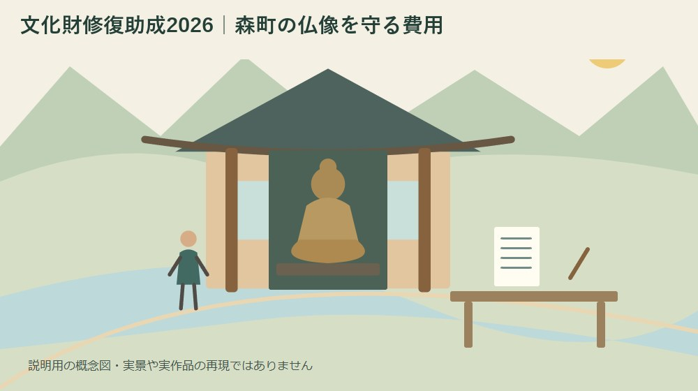
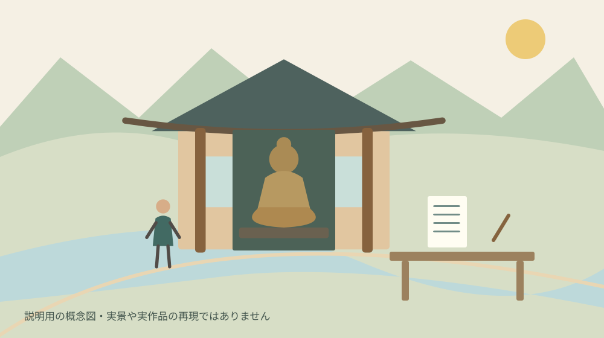

文化財修復助成2026｜森町の仏像を守る費用
／ 寺社・歴史

Q. 締切は消印有効？
住友財団の2026年度文化財維持・修復事業助成は11月30日必着です。国内の美術工芸品が対象で、所有者の申請が原則。見積書、推薦書、写真などが必要です。森町の個別文化財が採択されるかは別途審査で決まります。
仏像や絵画を守る方は、日々の管理だけでなく、傷みが見つかったときの相談や資金の段取りも背負います。文化財を残そうという掛け声だけでは、見積書を取る人も支払いを整理する人も決まりません。森町の社寺や地域で保存に関わる方へ、2026年度の住友財団の助成を申請準備の順で整理します。
私は大石浩之（磐田市／不動産業）です。この記事は修復の技術判断や採択予測をするものではありません。2026年10月7日に住友財団の公式案内と募集要項を確認し、森町の文化財資料と照らしました。制度の条件と、私が提案する費用・書類の整理方法を分けて記します。
2026年度は11月30日までに書類を届ける
公益財団法人住友財団の正式な制度名は「文化財維持・修復事業助成」です。2026年度の応募期間は10月1日から11月30日まで。募集要項は最終日までに申請書類等が必着と定めています。11月30日の消印があればよい、という意味ではありません。
募集要項では、申請書類等は郵送し、配達が記録される方法を使うよう案内しています。財団への持参は受け付けないとも記されています。締切の日に直接持って行けば間に合うと考えず、発送から到着までを含めた予定を組む必要があります。
助成期間は原則として2027年3月の合意書締結日から2028年3月までです。募集している2026年秋と、助成を受けて事業を行う期間には差があります。今すぐ修復費が振り込まれる仕組みではなく、申請、選考、合意、事業という順序で読むと誤解を防げます。
募集要項は2027年3月開催予定の理事会で決定し、採否を文書で知らせるとしています。申請を出した時点で採択や金額が決まるわけではありません。緊急の傷みがある場合は、助成の結果を待つだけでよいのかを保存修復の専門家へ相談し、資金の話と保全の判断を分けます。
対象は美術工芸品、建物全体の改修とは違う
住友財団の募集要項は、国内に所在する美術工芸品の維持・修復を対象としています。絵画、彫刻、工芸品、書跡、典籍、古文書、歴史資料、考古資料が列挙されています。仏像を検討する場合は彫刻という対象区分と照らし、文化的な価値や修復内容を資料で説明していくことになります。
山車などの車体や車輪の修理は対象外と明記されています。祭礼を支える品であっても、何を直すかによって扱いが違う点は見落とせません。私は、地域の文化に関わる費用を一括りにせず、対象物と作業の内訳から制度を選ぶ必要があると考えます。
堂の雨漏りと仏像の傷みが同時に気になる場合でも、建物の工事費と像の修復費は分けて整理します。この助成を堂全体の改修に使える制度と読むことはできません。見積書の段階から対象物と工事範囲が分かれていれば、財団や別の相談先へ説明するときも混乱が減ります。
申請者は、修復を必要とする文化財の所有者が原則です。事情により管理者の申請が認められる場合もあります。日常の世話をしている人、所有者、会計を扱う人が同じとは限らないため、誰の名義で申請するかを最初に確かめると、書類を作り直す負担を抑えられます。
営利を目的とする法人や、営利・私的鑑賞を目的に文化財を所有または管理する個人は原則対象外です。古い品を持っているというだけで申請できるわけではありません。団体の性格や所有管理の目的が条件に合うか判断できないときは、実態を整理して財団へ問い合わせます。
森町の仏像を知る資料と、申請資料をつなぐ
森町公式「図説森町史・森町の彫刻」は、町内に伝わる仏像を紹介しています。蔵泉寺や極楽寺などの像が取り上げられ、調査を通じて知られた作品の存在も説明されています。地域にある像の価値を知る入口ですが、掲載されていることが今回の助成採択を保証するものではありません。
森町公式の文化財案内では、指定文化財の種類や所有者・管理者などを確認できます。指定情報を探すときの入口と、財団の応募資格は別の資料です。町の一覧と手元の記録で名称に違いがあれば、通称で統一せず、正式名称と呼び名の対応を確認しておきます。
町内の像の所在を調べる入口は、森町の仏像を整理した記事にもあります。ただし、存在を知ることと、自由に拝観・撮影できることは別です。申請写真を撮る場合も、所有者や管理者の許可、像の状態、動かせる範囲を先に確かめます。
古文書も募集要項の対象に挙げられています。家や社寺の整理で紙の資料が見つかった場合は、仏像と同じ方法で扱うのではなく、資料に合う相談先が必要です。森町の古文書相談を扱った記事も参照し、自己流の補修に進む前に状態を伝える準備をします。

良い点は、修復そのものを支える入口があること
住友財団の助成の良い点は、美術工芸品の維持・修復に直接必要な経費を対象としていることです。私は、文化を紹介する催しだけでなく、物自体を残す仕事に資金の入口があることを評価します。公開の機会を作る以前に、傷みを調べ、次へ渡せる状態を保つ作業があるためです。
申請時に修復内容と費用が分かる見積書等を求める点にも意味があります。私は、資金の相談を機に、どこが傷み、どの処置にいくらかかるかを関係者が共有できると考えます。見積総額だけを会合に出すより、何のための支出なのかを説明できる状態へ近づけます。
推薦書や写真をそろえる作業も、単なる添付の手間とは限りません。対象物の来歴や価値、現況を別の人に説明できる記録になります。申請する人だけが経緯を知っている状態から、次の担当者が引き継げる状態へ移る機会として使えるところを、私は前向きに受け止めています。
ただし、助成があるから修復に着手するのではなく、必要な修復を検討した結果として資金を探す順序が自然です。申請書に合わせて不要な処置を増やすことは勧めません。何を残すために何をするのかを専門家と整理したうえで、対象になる経費を照合する方法です。
注文したい点は、申請前の仕事も負担として見たいこと
文化財修復の助成申請には、見積りの依頼、推薦の相談、写真の用意、関係者の合意などが伴います。私は、採択後の修復費だけでなく、申請前に誰が何時間動くかも表にしてほしいと考えます。制度を知る人が一人いても、その人へ全作業が集中すれば継続しにくくなります。
助成金額が決まる前に、地域側の持ち出しを確定扱いすることも避けたいところです。修復の総費用、助成を希望する額、自己資金として用意できる額を分けます。助成額を予想して差額をゼロと書くのではなく、未定欄を残して関係者へ説明するほうが資金の判断を誤りません。
見積りに運搬や保管、調査、報告書などが含まれるかは、個別の内容次第です。この記事では、各費目が一律に助成対象になるとは判断できません。依頼する業者に内訳を示してもらい、財団の条件と照らす必要があります。総額だけで比較すると、含む作業の違いを見落とすためです。
地域の管理者が交代する時期と、助成期間が重なる場合にも注意が要ります。採択後の連絡先、支払承認、報告書の作成担当が変わるなら、引継ぎが必要です。私は、申請の代表者名を決めるのと同時に、次の担当者へ渡す資料の保管場所も決めておくことを提案します。
対案・結論：対象物の名前と所有者を今日書き出す
文化財修復助成へ向けて今日できる一歩は、直したい物の名称、所有者、管理者、傷みの内容を一枚に書くことです。分からない欄は空欄のままで構いません。像なのか、台座なのか、建物なのかを分けるだけでも、どの専門家へ何を相談するかが具体的になります。
次に、募集要項を開き、必要資料を担当者別に割り振ります。申請書は一部、修復内容や費用が分かる事業見積書等を添付します。複数年の事業では全期間の資金計画書も必要です。書類の名称だけを転記せず、依頼先と受取り予定日を並べると、期限に間に合うか見通せます。
推薦書は学識経験者または有識者等によるものが一部必要です。誰に依頼できるか、どの資料を渡せば検討してもらえるかを早めに相談します。推薦者がすぐに決まることを前提に、最後の一週間へ残してしまうと、申請書ができても添付がそろわない可能性があります。
写真は現況のカラープリントで、全体が写るもの一枚以上と、修復が必要な部分の分かるもの二枚以上が求められます。これは同じ写真を三枚用意するという意味ではありません。安全に撮れる範囲を専門家や管理者と相談し、写真のために無理に像を動かさないようにします。
募集要項にはデジタル画像を収めた媒体と画像一覧の印刷も記載されています。パソコンで入力した申請書フォームも媒体へ収める案内があります。紙の封筒だけがそろえば終わりとせず、原文の提出物一覧を横に置き、送る資料と保管する控えを一つずつ照合します。
発送前には、名前、対象物名、見積金額、写真の対象が一致しているかを別の担当者にも見てもらいます。誤記の確認は、修復技術の判断とは別に地域側でできる仕事です。修復の必要部分が写真から分からない場合は、説明を長くする前に撮影や図示の方法を相談します。
家族や団体に残す記録は、採択後まで見通す
住友財団の募集要項は、助成期間の満了後に事業報告書、会計報告書、修復業者の修理報告書の写しを求めています。申請が通ったところで書類仕事が終わるわけではありません。私は、請求書や支払記録を後で集め直さなくて済むよう、事業開始時から保管の担当を決める方法を勧めます。
修復前と修復後の記録も、何をどのように残すかを業者と相談します。公開してよい写真と、管理上の理由で広く共有しない写真を分けると、報告と情報発信を混同せずに済みます。この記事で個別文化財の公開条件は確認していないため、所有者の意向を先に確かめます。
日々の見回りや保管場所の課題は、修復の完了後にも残り得ます。私は、修復費だけで一区切りにせず、誰が状態を確かめ、異変をどこへ伝えるかまで引き継ぎたいと考えます。森町の文化財保存活用を考える記事にも、地域で継承を支える視点を整理しています。
採択されなかった場合の段取りも、あらかじめ分けて考えます。傷みの確認記録を残す、見積内容を専門家と再検討する、別の資金手段を調べるなどです。落選を理由に危険な状態を放置してよいとは限りません。応急的な保全が必要かは、文化財に適した専門家へ相談します。
大石の視点：助成額より先に、担当と支払いを決める
私は、修復の資金計画も、不動産の管理費を考えるときと同じく、支払う人と作業する人を分けて見ます。地域の思いがそろっていても、見積りを取る人、決裁する人、振込をする人が曖昧だと止まります。今日の段取りを具体化することが、文化を残す話を実際の仕事へ変えます。
ここは私の意見として書きます。相談用の紙を作るなら、私は左に修復対象、中央に必要資料、右に担当者を置きます。金額を大きく書くのは、その三つがつながってからです。今回の助成を扱った実体験ではありませんが、費用だけで話を進めないという、私の実務上の判断基準を当てはめた整理です。
私にも迷いがあります。締切に間に合わせたい気持ちと、所有関係や修復方針を十分に確認したい気持ちは、簡単には両立しません。それでも、未確認のまま申請名義や工事範囲を埋めることは勧めません。間に合わない項目を早く見つけ、相談できる余地を残すほうを選びます。
助成は、担い手の仕事をなくす制度ではありません。仕事を続けるための資金の入口です。森町の個別の像が対象になるか、いくら採択されるかは、私には分かりません。だからこそ今日の成果は、採択の期待を膨らませることより、対象物と担当者を一枚に結びつけることに置きたいと思います。
FAQ
11月30日に郵送すれば間に合いますか？
2026年度の募集は11月30日必着です。最終日に発送しただけでは条件を満たしません。募集要項は配達が記録される方法での郵送を求め、持参は受け付けないとしています。見積書や推薦書、写真、データ媒体がそろう日から逆算し、配送日数を見込んで発送してください。直前には公式要項の変更も確認します。
お堂や山車の修理にも使えますか？
対象は国内の美術工芸品の維持・修復であり、堂全体の改修に使う制度としては案内されていません。山車などの車体や車輪の修理は対象外と明記されています。同じ場所にある像と建物を一括の工事として考えず、何をどの方法で直すかを見積りで区分します。個別費目の対象可否は財団へ確認してください。
写真を送れば申請できますか？
写真だけでは申請資料がそろいません。所定申請書、修復内容と費用が分かる見積書等、推薦書、現況写真、画像等を収めた媒体などが必要です。写真は全体一枚以上と修復必要部分二枚以上が求められます。複数年事業には全期間の資金計画書も必要なので、2026年度募集要項の提出一覧を照合してください。
出典・確認日
- 住友財団・文化財維持・修復事業助成（2026年10月確認／確認日：2026-10-07）
- 住友財団・2026年度募集要項（2026年10月確認／確認日：2026-10-07）
- 森町・図説森町史「森町の彫刻」（2026年10月確認／確認日：2026-10-07）
- 森町・文化財案内（2026年10月確認／確認日：2026-10-07）
最終確認日：2026-10-07。制度・日程・数値・受付条件は変わる場合があります。最新情報は発信主体へ確認し、修復・権利・税務などの個別判断は適切な専門家へご相談ください。